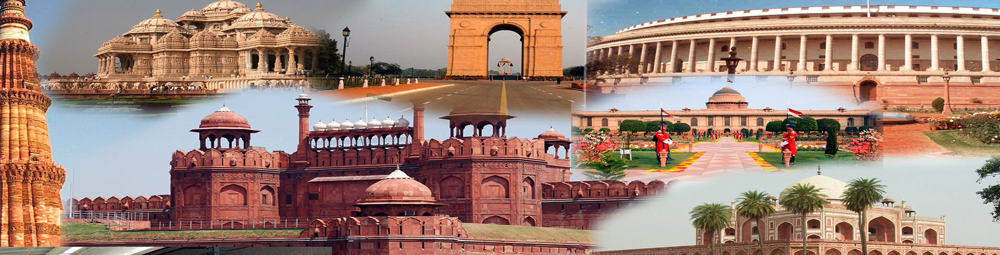

Delhi, city and national capital territory, north-central India. The city of Delhi actually consists of two components: Old Delhi, in the north, the historic city; and New Delhi, in the south, since 1947 the capital of India, built in the first part of the 20th century as the capital of British India.
Delhi has been the centre of a succession of mighty empires and powerful kingdoms. Numerous ruins scattered throughout the territory offer a constant reminder of the area’s history. Popular lore holds that the city changed its locality a total of seven times between 3000 BCE and the 17th century CE, although some authorities, who take smaller towns and strongholds into account, claim it changed its site as many as 15 times. All the earlier locations of Delhi fall within a triangular area of about 70 square miles (180 square km), commonly called the Delhi Triangle. Two sides of the triangle are articulated by the rocky hills of the Aravalli Range—one to the south of the city, the other on its western edge, where it is known as the Delhi Ridge. The third side of the triangle is formed by the shifting channel of the Yamuna River. Between the river and the hills lie broad alluvial plains; the elevation of the territory ranges from about 700 to 1,000 feet (200 to 300 metres).